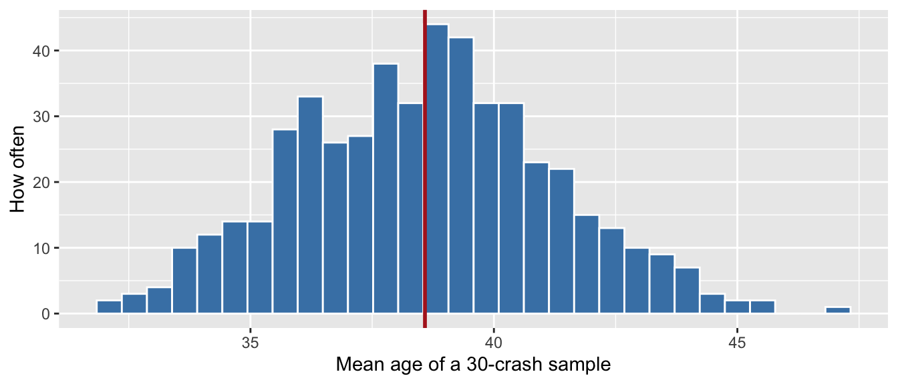

Lab 4 · Building a Sampling Distribution
CRJU 705 · Session 4
Goal: see, with your own hands, the three ideas from today’s lecture — the long run settles down, a sample mean is a moving target, and the standard error is how much it moves. Nothing here needs a new package or a new verb. It is sample(), mean(), and one repeat command.
How labs work: run the Setup chunk as-is, follow the Walkthrough along with me, then complete the Your Turn tasks in your own script. The Exit Ticket gets submitted to Canvas before you leave.
Setup
Open RStudio, start a new R script, and run:
crashes holds 20,000 Alaska traffic crashes (simulated, but realistic). We only need two columns today: driver_age, and the anyone_hurt column we just built, which is TRUE when at least one person was injured.
crashes |> select(driver_age, injuries, anyone_hurt) |> slice_sample(n = 6)# A tibble: 6 × 3
driver_age injuries anyone_hurt
<dbl> <dbl> <lgl>
1 66 5 TRUE
2 24 3 TRUE
3 34 1 TRUE
4 27 1 TRUE
5 54 0 FALSE
6 16 2 TRUE For today, pretend these 20,000 crashes are the whole population — every crash there is. That is a fiction, and it is the most useful fiction in statistics, because it lets us check our answers against a truth we can actually see.
Walkthrough
The truth we are allowed to peek at
Mean driver age is about 38.6. Remember that number. In real research you never get to run this line.
One sample of 30
Now act like a researcher who can only pull 30 case files:
Not 38.6. Run it again:
[1] 40.8[1] 40.9Three samples, three answers, one population. Nothing went wrong. This is sampling error, and it is the whole reason this course exists.
Do it 500 times
replicate() repeats a line of code and keeps the answers:
[1] 35.33333 35.46667 40.73333 39.56667 39.06667 43.60000That is one line doing what would take you all night by hand. Now look at the shape of those 500 answers:
tibble(sample_mean = many_means) |>
ggplot(aes(x = sample_mean)) +
geom_histogram(bins = 30, fill = "steelblue", color = "white") +
geom_vline(xintercept = mean(crashes$driver_age),
color = "firebrick", linewidth = 1) +
labs(x = "Mean age of a 30-crash sample", y = "How often")
That histogram is a sampling distribution: not the distribution of ages, but the distribution of what a study would have concluded. The red line is the truth. Most studies land near it. Some do not.
The standard error
How far off is a typical study? That is just the standard deviation of those 500 answers:
sd(many_means)[1] 2.654411And here is the payoff. There is a formula for that number, and you never had to simulate anything:
Close. That is the standard error: the typical distance between a sample mean and the truth. Notice what is on the bottom — \(\sqrt{n}\). Quadruple your sample size and you halve your error. That is why sample size costs money.
Workflow hygiene: scripts and projects
Three habits, thirty seconds, the rest of your life:
- Your script is the source of truth, not your console. If you typed it in the console and it worked, paste it into the script. The console is scratch paper.
-
Use an RStudio Project for this course.
File > New Project…once, then always open the course through the.Rprojfile. Your working directory is then always the project folder, paths stay relative, and your code runs on any machine — including mine when I grade it. -
Never trust the Environment pane. Before you submit anything:
Session > Restart R, then run your script top to bottom. If it only works because of something you defined an hour ago and deleted, you want to find that out now, not from me.
Your Turn
Work in your own script. Comment each answer.
1. The long run. Run each of these lines, then run the first one five separate times. How much does the 10-crash answer bounce around compared to the 1,000-crash answer?
2. One sample. Draw a single sample of 30 from driver_age and take its mean. In a comment: how far off from the true 38.6 did you land?
# your code here3. Five hundred samples. Use replicate() to take 500 samples of size 30 from driver_age, keeping each sample’s mean. Put them in a tibble and make a histogram. In a comment, describe the shape.
# your code here — the walkthrough has the pattern4. The standard error, both ways. Take sd() of your 500 means, then compute sd(crashes$driver_age) / sqrt(30). In a comment: how close are they, and what does this number tell a researcher who only ever gets one sample?
# your code here5. The strange one. anyone_hurt is just TRUE or FALSE — there is no bell curve anywhere in it. Take 500 samples of size 100 and record the proportion hurt in each (mean() of a TRUE/FALSE column gives you a proportion). Histogram those 500 proportions. In a comment: what shape did you get, and does it surprise you given what you started with?
# your code hereExit Ticket
Submit a short R script to Canvas before you leave, containing:
- Your code from Your Turn 3, plus a comment naming what the histogram is a distribution of — it is not a distribution of ages
- Your two standard error numbers from Your Turn 4, and a one-sentence comment on how close they came
- A comment (1–2 sentences) on Your Turn 5: you started with nothing but TRUE and FALSE, so where did that shape come from?
- A comment naming one thing from today that is still fuzzy